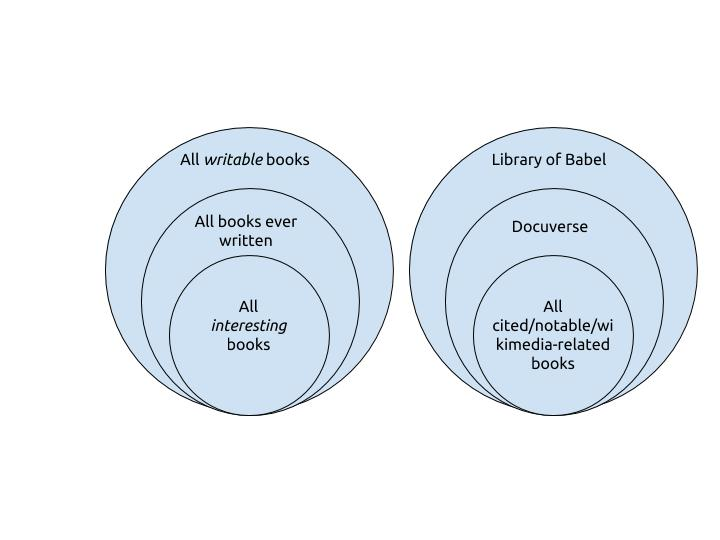

<!doctype html>
<html lang="en">

	<head>
		<meta charset="utf-8">

		<title>Immaginare biblioteche</title>

		<meta name="description" content="Wikidata and BOOOOKS">
		<meta name="author" content="Andrea Zanni">

		<meta name="apple-mobile-web-app-capable" content="yes" />
		<meta name="apple-mobile-web-app-status-bar-style" content="black-translucent" />

		<meta name="viewport" content="width=device-width, initial-scale=1.0, maximum-scale=1.0, user-scalable=no">

		<link rel="stylesheet" href="reveal.js/css/reveal.css">
		<link rel="stylesheet" href="reveal.js/css/theme/black.css" id="theme">

		<!-- For syntax highlighting -->
		<link rel="stylesheet" href="reveal.js/lib/css/zenburn.css">

		<!-- If the query includes 'print-pdf', use the PDF print sheet -->
		<script>
			document.write( '<link rel="stylesheet" href="reveal.js/css/print/' + ( window.location.search.match( /print-pdf/gi ) ? 'pdf' : 'paper' ) + '.css" type="text/css" media="print">' );
		</script>

		<!--[if lt IE 9]>
		<script src="reveal.js/lib/js/html5shiv.js"></script>
		<![endif]-->
	</head>

	<body>

		<div class="reveal">

            <div class="slides">

                
<section data-markdown data-separator="^\n---\n$" data-separator-vertical="^\n--\n$" data-notes="^Note:">
<script type="text/template">

<!-- .slide: data-background="#bb0000" -->

##Wikidata and BOOOOKS

[Andrea Zanni](http://aubreymcfato.com)

User:Aubrey / [@aubreymcfato](http://twitter.com/aubreymcfato)

---

<!-- .slide: data-background="#0A2A34" -->
books are _complex_. 

--

<!-- .slide: data-background="#0A2A34" -->
Librarian legacy: 

* billions of books, articles, documents
* many metadata schemas 
* many conceptual frameworks

--

<!-- .slide: data-background="#0A2A34" -->
there are different levels/points of view/interpretation of
what is a book. 

--

<!-- .slide: data-background="#ffffff" -->
</img>

---

<!-- .slide: data-background="#03004d" -->
_work_ and _edition_

--

<!-- .slide: data-background="#03004d" -->
The book you have in front of you is a specific edition, in a specific language of a book. It could be an ebook or a paper book. 

--

<!-- .slide: data-background="#03004d" -->
PDFs, epubs, hardcover, paperbacks can have different ISBNs.  
ISBNs are at the _edition_ level. 

--

<!-- .slide: data-background="#03004d" -->
book as a _work_: the "abstract" book.

--

<!-- .slide: data-background="#03004d" -->
There are many _conceptual frameworks_ about books (FRBR, BIBFRAME, RDA).
Most of them are converging to this 2-level concept (OpenLibrary, Worldcat) 

---

<!-- .slide: data-background="#006633" -->

##Where are we now

--

<!-- .slide: data-background="#006633" -->
Historically, we have created items about books directly from Wikipedia articles. 

--

<!-- .slide: data-background="#006633" -->
Wikipedia articles about books are about _notable_ books.

--

<!-- .slide: data-background="#006633" -->
notable > important > many editions and translations

--

<!-- .slide: data-background="#006633" -->
Wikidata items from Wikipedia articles about books are, very often, at the _work_ level.

--

<!-- .slide: data-background="#006633" -->
Wikisource, on the other hand, transcribe specific editions of books. 
They are at the _edition_ level.

Commons, Wikiquote too. 

--

<!-- .slide: data-background="#006633" -->
How should we model the relationship between _works_ and _editions_?

--

<!-- .slide: data-background="#006633" -->
Should we create a work item for every book, even if we have just one edition on Wikisource?
Should we create a work item only when we need it?


Two items for each book is consistent but complicated.
One item for each book is simple but too simplicistic.   
A mixed approach is quite simple but messy. 

--

<!-- .slide: data-background="#006633" -->
What should we do with anthologies, meaning books with different works inside?
What should we do with works that generates a lot of derivative works (like other books, movies, serials?)

--

<!-- .slide: data-background="#006633" -->
We need workflows for people in different projects to deal with books.
This means some tools too (eg. duplicate this item and transfer all the properties) 

--

<!-- .slide: data-background="#bb0000" -->

Book properties (_work_ and _editions_) need to be reviewed. Often, people read the same property in different ways, 
with different scopes.  

--

<!-- .slide: data-background="#bb0000" -->

instance of:

+ book
+ literary work
+ work
+ edition

---

<!-- .slide: data-background="#1d9608" -->
which books are we gonna put in Wikidata?

--

<!-- .slide: data-background="#ffffff" -->

</img>

--

<!-- .slide: data-background="#1d9608" -->
##Thanks

Follow up on [WikiProject Books](https://www.wikidata.org/wiki/Wikidata_talk:WikiProject_Books)


</script>
</section>


            </div>

		</div>

		<script src="reveal.js/lib/js/head.min.js"></script>
		<script src="reveal.js/js/reveal.js"></script>

		<script>

			// Full list of configuration options available here:
			// https://github.com/hakimel/reveal.js#configuration
			Reveal.initialize({
				controls: true,
				progress: true,
				history: true,
				center: true,

				theme: Reveal.getQueryHash().theme, // available themes are in /css/theme
				transition: 'default', // default/cube/page/concave/zoom/linear/fade/none

                

				// Optional libraries used to extend on reveal.js
				dependencies: [
					{ src: 'reveal.js/lib/js/classList.js', condition: function() { return !document.body.classList; } },
					{ src: 'reveal.js/plugin/markdown/marked.js', condition: function() { return !!document.querySelector( '[data-markdown]' ); } },
					{ src: 'reveal.js/plugin/markdown/markdown.js', condition: function() { return !!document.querySelector( '[data-markdown]' ); } },
					{ src: 'reveal.js/plugin/highlight/highlight.js', async: true, callback: function() { hljs.initHighlightingOnLoad(); } },
					{ src: 'reveal.js/plugin/zoom-js/zoom.js', async: true, condition: function() { return !!document.body.classList; } },
                    
					{ src: 'reveal.js/plugin/notes/notes.js', async: true, condition: function() { return !!document.body.classList; } }
                    
                    
				]
			});

		</script>

	</body>
</html>
